1076A48 CATALYTIC CONVERTER HEAT SHIELD - R R
- Path
- Procedures > 10 ENGINE UNIT > 1076 EXHAUST PIPES AND SILENCERS > 1076A EXHAUST PIPE FASTENINGS AND PROTECTIONS > 1076A48 CATALYTIC CONVERTER HEAT SHIELD - R R
- Kind
- repair procedure (removal / refitting; the operation number is the code)
- Applies to
- all engines; all production periods
- Interactive page
- https://sloeber94.github.io/elrnDB-aGt/en/#/125001093
Applies to: engines: 2.0 JTS; all production periods
 Removing
Removing
 Refitting
RefittingPosition the vehicle on a lift.
Make sure that the ignition key is in the OFF position, then disconnect the negative battery terminal.
Description | Connector | |
|---|---|---|
- | Battery | See A1B BATTERY ( BATTERY NEGATIVE ) |
Proceed with the removal
Op. 1016A40 IGNITION COIL COVER ON CYLINDER HEAD- R+R.
1. Disconnect the electrical connection for the right Lambda sensor and release it from the mounting bracket.
Description | Connector | |
|---|---|---|
1 | Lambda sensor on pre-catalyzer - 2 | See K16 LAMBDA SENSOR ON PRE-CATALYZER -2 ( CONNECTORS ) |
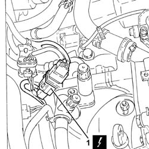
Applies to: engines: 2.0 JTS; all production periods
1. Undo the bolt fixing the Lambda sensor electrical connections mounting bracket to the tappet cover.
2. Undo the two upper bolts fixing the heat shield for the catalytic converter.
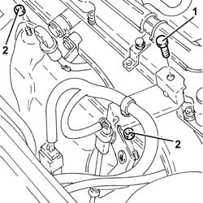
Applies to: engines: 2.0 JTS; all production periods
Proceed with the removal
Op. 7055B54 UNDER-ENGINE GUARD - R R.
1. Undo and remove the right Lambda sensor.
2. Undo the four lower bolts fixing the heat shield for the catalytic converter.
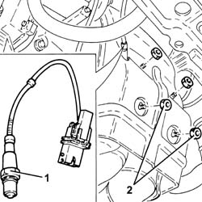
Applies to: engines: 2.0 JTS; all production periods
1. Remove the catalytic converter heat shield.
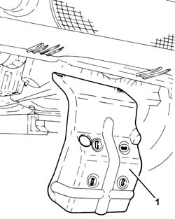
Applies to: engines: 2.0 JTS; all production periods
1. Undo the nuts (1a) and remove the right heat shield for the catalytic converter (1b).
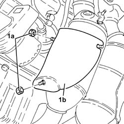
Applies to: engines: 2.0 JTS; all production periods
1. Undo the nuts (1a) and remove the left heat shield for the catalytic converter (1b).
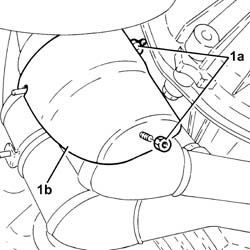
Applies to: engines: 2.0 JTS; all production periods
Refitting
RemovingPlace the left heat shield for the catalytic converter in its housing and fasten it using the nuts.
Place the right heat shield for the catalytic converter in its housing and fasten it using the nuts.
Place the heat shield for the catalytic converter in its housing and fasten it using the four lower nuts.
Position the right Lambda sensor in its housing and tighten it to the recommended torque.
Fastening | Component | Ø | Value (daNm) | |
|---|---|---|---|---|
- | - | RIGHT LAMBDA SENSOR | M18 | 4.0 ÷ 5.0 |
Proceed with the refitting
Op. 7055B54 UNDER-ENGINE GUARD - R R.
Tighten the two upper nuts fixing the heat shield for the catalytic converter.
Tighten the bolt fixing the Lambda sensor electrical connections mounting bracket to the tappet cover.
Connect the electrical connection for the right Lambda sensor and secure it to the mounting bracket.
Proceed with the refitting
Op. 1016A40 IGNITION COIL COVER ON CYLINDER HEAD- R+R.
Connect the negative battery terminal (-).
Remove the vehicle from the lift.
Applies to: engines: 3.2 V6; all production periods
Removing
RefittingPosition the vehicle on a lift.
Make sure that the ignition key is in the OFF position, then disconnect the negative battery terminal (-).
Description | Connector | |
|---|---|---|
- | Battery | See A1B BATTERY ( BATTERY NEGATIVE ) |
Proceed with the removal
Op. 7055B54 UNDER-ENGINE GUARD - R R.
1. Undo the nuts fixing the exhaust pipes between the catalytic preconverters and the catalytic converter, catalytic preconverter side.
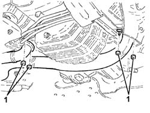
Applies to: engines: 3.2 V6; all production periods
Proceed with the removal
Op. 1080B96 LEFT REAR LAMBDA SENSOR ON CATALYTIC CONVERTER R R.
Proceed with the removal
Op. 1080B97 RIGHT REAR LAMBDA SENSOR ON CATALYTIC CONVERTER R R.
1. Undo the bolts fixing the catalytic converter assembly, intermediate silencer side.
2. Remove the catalytic converter assembly (2a) complete with pipes between the catalytic preconverters and the catalytic converter (2b) after having released it from the flexible mountings (2c).
Remove the seals.
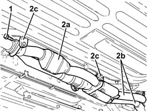
Applies to: engines: 3.2 V6; all production periods
1. Using a drill, remove the rivets (1a) and remove the heat shield for the catalytic converter (1b).
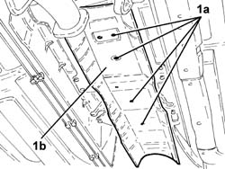
Applies to: engines: 3.2 V6; all production periods
Refitting
RemovingPlace the heat shield for the catalytic converter in its housing and fasten it using the rivets.
1. Place the catalytic converter assembly (1a) in position complete with the pipes between the catalytic preconverters and the catalytic converter (1b) and seals, then fasten it to the flexible mountings (1c).
2. Tighten the bolts fixing the catalytic converter assembly, intermediate silencer side to the recommended torque.
Fastening | Component | Ø | Value (daNm) | |
|---|---|---|---|---|
2 | Bolt | CATALYTIC CONVERTER (ONE) | M8 | (Intermediate silencer side) 2.3 - 2.8 |
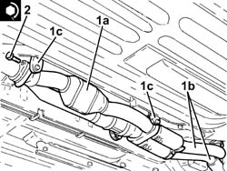
Applies to: engines: 3.2 V6; all production periods
Proceed with the refitting
Op. 1080B96 LEFT REAR LAMBDA SENSOR ON CATALYTIC CONVERTER R R.
Proceed with the refitting
Op. 1080B97 RIGHT REAR LAMBDA SENSOR ON CATALYTIC CONVERTER R R.
1. Tighten the nuts fixing the exhaust pipes between the catalytic preconverters and the catalytic converter, catalytic preconverter side to the recommended torque.
Fastening | Component | Ø | Value (daNm) | |
|---|---|---|---|---|
1 | Nut | PIPE RIGHT CONVERTER/PRECONVERTER | M8 | (Catalytic preconverter side) 2.3 - 2.8 |
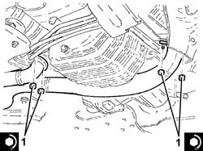
Applies to: engines: 3.2 V6; all production periods
Proceed with the refitting
Op. 7055B54 UNDER-ENGINE GUARD - R R.
Connect the negative battery terminal (-).
Remove the vehicle from the lift.
Applies to: engines: 1.9 JTD 16V; all production periods
Removing
RefittingPosition the vehicle on a lift.
Proceed with the removal
Op. 1080B62 CATALYTIC CONVERTER - R + R.
1. Remove the rivets fixing the heat shield using a drill.
2. Remove the catalytic converter heat shield.
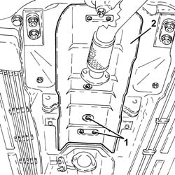
Applies to: engines: 1.9 JTD 16V; all production periods
Refitting
RemovingPlace the heat shield for the catalytic converter in its housing and fasten it using new rivets.
Proceed with the refitting
Op. 1080B62 CATALYTIC CONVERTER - R + R.
Remove the vehicle from the lift.
Applies to: engines: 1.8 T.SPARK; all production periods
Removing
RefittingPosition the vehicle on a lift.
Make sure that the ignition key is in the OFF position, then disconnect the negative battery terminal.
Description | Connector | |
|---|---|---|
- | Battery | Vedere A1B BATTERIA ( CABLAGGI ) |
1. Disconnect the electrical connection for the Lambda sensor.
Description | Connector | |
|---|---|---|
1 | Lambda sensor downstream of the post-converter | Vedere K17 SONDA LAMBDA A VALLE DEL POST-CATALIZZATORE ( MOTORE ) |
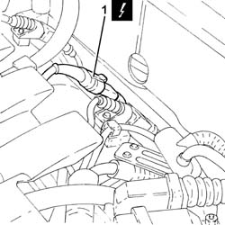
Applies to: engines: 1.8 T.SPARK; all production periods
1. Release the electrical wiring for the Lambda sensor from the fastenings on the underbody.

Applies to: engines: 1.8 T.SPARK; all production periods
1. Loosen the collar fastening the intermediate silencer to the rear silencer.
2. Release the intermdiate silencer (2a) from the flexible mounting (2b).

Applies to: engines: 1.8 T.SPARK; all production periods
1. Undo the bolt fixing the front flexible mounting bracket for the intermediate exhaust silencer.
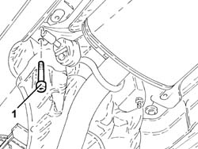
Applies to: engines: 1.8 T.SPARK; all production periods
1. Undo the nuts fixing the catalytic converter to the catalytic preconverter.

Applies to: engines: 1.8 T.SPARK; all production periods
1. Undo the bolts fixing the catalytic converter flexible mounting brackets.
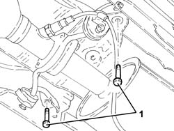
Applies to: engines: 1.8 T.SPARK; all production periods
1. Remove the catalytic converter assembly (1a) and the intermediate silencer (1b).
Remove the seals.
2. Using a drill, remove the rivets and remove the heat shield for the catalytic converter.

Applies to: engines: 1.8 T.SPARK; all production periods
Refitting
RemovingPlace the heat shield for the catalytic converter in its housing and fasten it using suitable rivets.
Place the catalytic converter complete with intermediate silencer and seal in position.
Tighten the bolts fixing the catalytic converter flexible mounting brackets.
1. Tighten the nuts fixing the catalytic converter to the catalytic preconverter to the recommended torque.
Fastening | Component | Ø | Value (daNm) | |
|---|---|---|---|---|
1 | Nut | CATALYTIC CONVERTER (ONE) | M8 | (Catalytic preconverter side) 2.7 - 3.3 |

Applies to: engines: 1.8 T.SPARK; all production periods
Tighten the bolt fixing the front flexible mounting bracket for the intermediate exhaust silencer.
Fasten the intermediate silencer to the flexible mounting.
Tighten the collar fastening the intermediate silencer to the rear silencer.
Fasten the electrical wiring for the Lambda sensor to the fastenings on the underbody.
Connect the electrical connection for the Lambda sensor.
Connect the negative battery terminal (-).
Remove the vehicle from the lift.
Topics linked from this page (5)
- 1016A40 IGNITION COIL COVER ON CYLINDER HEAD- R+R
- 1080B62 CATALYTIC CONVERTER - R + R
- 1080B96 LEFT REAR LAMBDA SENSOR ON CATALYTIC CONVERTER R R
- 1080B97 RIGHT REAR LAMBDA SENSOR ON CATALYTIC CONVERTER R R
- 7055B54 UNDER-ENGINE GUARD - R R
Topics that link to this page (25)
- 1008A44 REAR RIGID MOUNT - R R
- 1020A20 CRANK CASE OIL SUMP - R + R CLEAN SEALS FOR SEALANT APPLICATION
- 1020D10 FRONT CRANK SHAFT OIL SEAL COVER - R + R AND REPLACE SEALS WITH TIMING BELT REMOVED
- 1020D15 FRONT CRANKSHAFT OIL SEAL COVER-R+R AND REPLACE SEALS FOR ENGINES WITH OIL PUMP ON CRANKSHAFT AND HEAT EXCHANGER
- 1020D36 FLYWHEEL END OIL SEAL - REPLACE FOR MANUAL GEARBOX WITH HYDRAULIC SELECTION VERSIONS
- 1020D38 FLYWHEEL SIDE OIL SEAL - REPLACE
- 1024B10 ENGINE FLYWHEEL - R + R FOR VERSIONS WITH MANUAL GEARBOX
- 1024B11 ENGINE FLYWHEEL - R R FOR MANUAL GEARBOX WITH HYDRAULIC SELECTION VERSIONS
- 1028H10 PISTON WITH CONNECTING ROD - R R
- 1076B10 EXHAUST PIPE ASSEMBLY - R + R
- 1076B34 FRONT CATALYTIC CONVERTER ATTACHMENT SEAL - REPLACE
- 1080B62 CATALYTIC CONVERTER - R + R
- 1084B26 EMGINE OIL INTAKE DUCT - R R
- 1084C10 STAFFA DI SUPPORTO DEL RADIATORE RAFFREDDAMENTO OLIO MOTORE - R.R.
- 1084C12 SCAMBIATORE DI CALORE OLIO MOTORE COMPLETO DEI TUBI DI ENTRATA E USCITA LIQUIDO DI RAFFREDDAMENTO - S.R.
- 1088D24 RIGID PIPE FOR COOLANT INLET TO WATER PUMP - R + R
- 1810A20 CLUTCH - R + R
- 1810A28 CLUTCH - R R FOR MANUAL GEARBOX WITH HYDRAULIC SELECTION VERSIONS
- 1820A24 THRUST BEARING LINKAGE - R + R
- 2110A10 MANUAL GEARBOX AND DIFFERENTIAL - R + R
- 2110A11 MANUAL GEARBOX WITH DIFFERENTIAL - R R FOR VERSIONS WITH HYDRAULIC SELECTION
- 2110C24 SEALS FOR GEARBOX INPUT SHAFT - R R FOR MANUAL GEARBOX WITH HYDRAULIC SELECTION VERSIONS
- 4130B40 OUTLET PIPE FROM PUMP TO POWER STEERING CASE R R
- 4410D13 FRONT SUSPENSION BEAM - R R
- 4410D15 FRONT SUSPENSION BEAM COMPLETE WITH WISHBONES AND STABILISER BAR R R